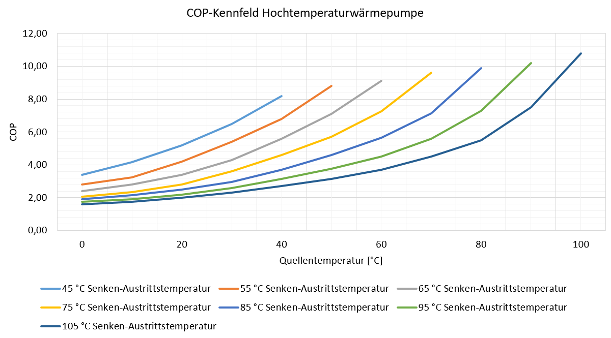
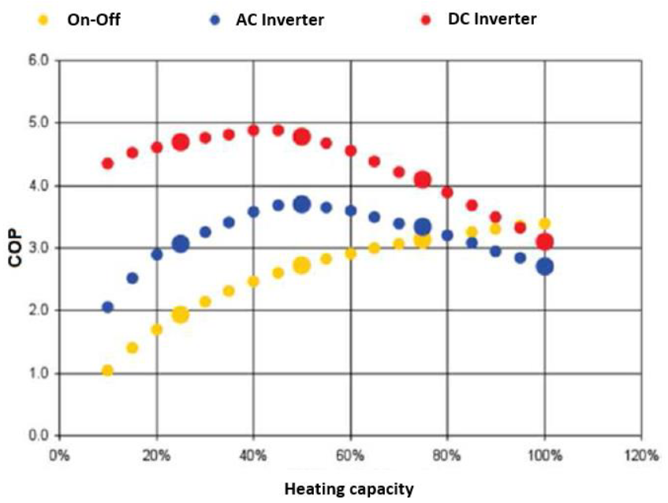
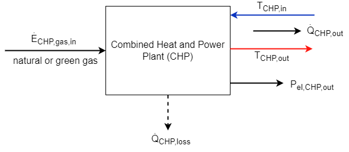
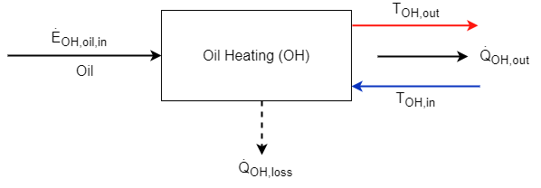
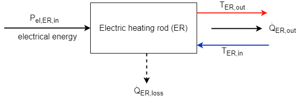
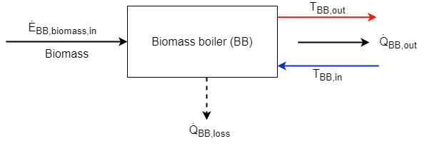
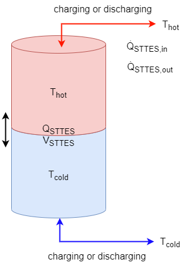
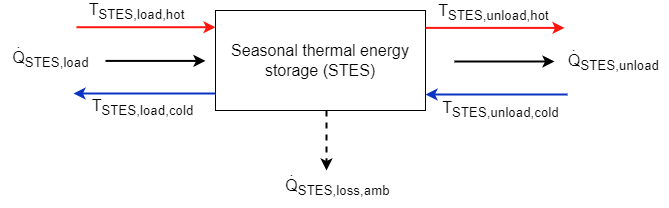
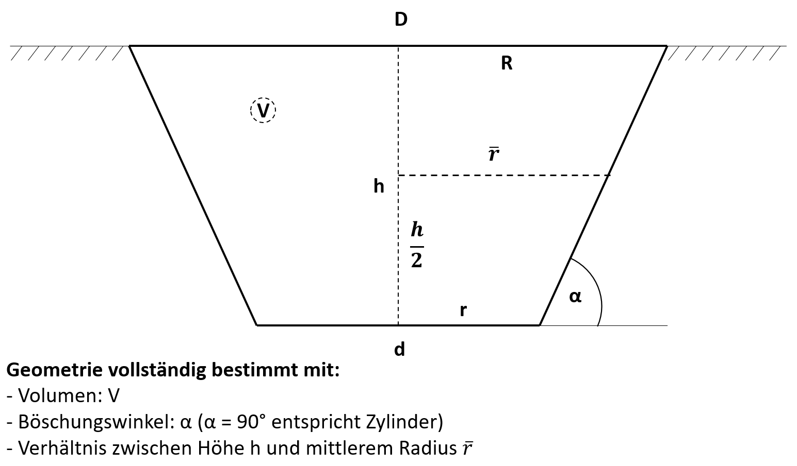
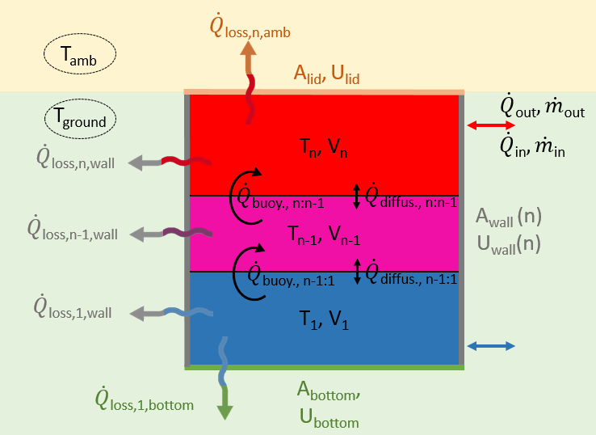

Technical description of main components
Heat pump (HP)
As heat pumps, electrically driven variable-speed compressor heat pumps can be integrated into the simulation model. Their general system diagram is shown in figure 1.
Fig. 1: General system chart of a heat pump

The energy balance at the heat pump is built up from the incoming electricity, the incoming heat at a low temperature level and the outgoing heat flow at a higher temperature level. The efficiency of the heat pump is defined by the coefficient of performance (COP) as a function of the condenser outlet temperature and the evaporator inlet temperature (see Figure 2).
Fig. 2: Energy balance of the heat pump model

The coefficient of performance (COP) determines the electrical power required to raise the temperature of a mass flow from the lower temperature level to :
The coefficient of performance is always smaller than the maximum possible Carnot coefficient of performance (), which is calculated from the condenser outlet and evaporator inlet temperature. In Quasi, either the or a COP chart as lookup table can be used to get the current COP in every timestep. The COP chart is given as universal chart for varius heat pumps. For computational efficiency, the COP chart is fitted to a polynom during initialisation of the simulation. As example, the following figure shows a map of a high-temperature heat pump as a set of curves, depending on the evaporator inlet and condenser outlet temperature. In three dimensions, this figure would result in a surface that can be parameterized with a three-dimensional spline interpolation algorithm. The Carnot-COP calculated from the temperatures is computationally more efficient compared to the COP chart. The Carnot-COP is reduced by the carnot effiency factor , which is according to [Arpagaus2018]1 around 45% for high temperature heat pumps and around 40% for conventional heat pumps.
Fig. 3: COP chart of a high-temperature heat pump, given as a series of curves

The energy balance (or power balance) of the heat pump can be determined according to Figure 2, as well as a relationship between supplied and dissipated heat output as a function of the coefficient of performance:
The power of the heat pump's electric supply, including the losses of the power electronics, is given as:
The maximum thermal power of the heat pump is not constant for different operation temperatures. The available thermal power is decreasing with lower source temperature, an effect that mainly occurs in heat pumps with air as the source medium.
Stiebel-Eltron: Thermische Leistung konstant über verschiedene Vorlauftemperaturen, aber verändert über verschiedene Quellentemperaturen. Elektrische Leistung konstant über verschiedene Quelltemperaturen, aber verändert über unterschiedliche Vorlauftemperaturen. --> Zu komplex, Entscheidung nötig, ob Wärmeleistung oder elektrische Leistung konstant ist! ToDo
Assumption: Thermal losses of the HP are already included in the coefficient of performance.
Assumption: The heat output of the heat pump behaves linearly in part load operation between at and at 100% compressor speed:
Fig. 4: Linear behaviour of thermal output power in part load operation

The COP of the modeled heat pump depends not only on the temperatures of the sink and the source but also on the part load operation. The relation of the COP and the partial load is assumed to be non-linear. The COP can be corrected using a non-linear part load factor. It follows from the definition of the COP that the correlation between the electrical power consumption and the heat output of the heat pump is therefore not linear too. The coefficient of performance in partial load operation is approximated using the following correction function. Example --> Generalize?! TODO:

Image from 2
Exemplary correction curve for the COP at partial load and a 4 grade fitting polynome:

Since the temperatures of the heat flows entering and leaving the heat pump, which have not been considered so far, are also relevant, the heat outputs can be calculated on the basis of the respective mass flow and the physical properties of the heat transfer medium (specific heat capacity and, if applicable, the density ) by rearranging the following equation:
Inputs und Outputs of the Heat Pump:
| Symbol | Description | Unit |
|---|---|---|
| heat flow supplied to the HP (heat source) | [MW] | |
| heat flow leaving the HP (heat sink) | [MW] | |
| electric power demand of the HP | [MW] | |
| electric power demand of the HP incl. losses of the power electronics | [MW] | |
| condenser inlet temperature | [°C] | |
| condenser outlet temperature | [°C] | |
| evaporator inlet temperature | [°C] | |
| evaporator outlet temperature | [°C] |
Parameter of the Heat Pump:
| Symbol | Description | Unit |
|---|---|---|
| maximum thermal power of the heat pump | [MW] | |
| minimum thermal power of the heat pump at | [MW] | |
| minimum possible part load of the heat pump [%] | ||
| coefficient of performance (COP) of the heat pump incl. thermal losses depending on and and on current state | [-] | |
| efficiency of power electronics of heat pump | [-] | |
| efficiency factor of heat pump, reduces the Carnot-COP | [-] | |
| minimum operating time of heat pump | [min] | |
| start-up time of the HP until full heat supply (linear curve) | [min] |
State Variables of Heat Pump:
| Symbol | Description | Unit |
|---|---|---|
| current operating state (on, off, part load) | [%] |
TODO: Teillastverhalten? getaktet oder Drehzahlgeregelt (Inverter)? Anpassung des COPs über lineare oder quadratische Funktion? Oder konstander Wirkungsgrad in Teillast?
Beispiel für quadratische Teillastverhalten des COPs:
 Image from [Wemhöner2020]3
TODO: COP über Kennfeld und Fit auf Polynom oder über COP mit Gütegrad?
Electrolyser
The electrolyzer uses electrical energy to split water into its components hydrogen () and oxygen () as shown in the following reaction equation:
If the electrical energy is provided by renewable energies, the resulting hydrogen is labeled as "green hydrogen" and can be used to decarbonize the mobility or industrial sector or fed into the natural gas grid. The waste heat generated in the process can be used directly by feeding it into a heat network or via an intermediate heat pump. For flexible operation, it is possible to discharge the waste heat to the environment using a chiller. The use of waste heat is an important factor for the overall efficiency of the electrolyzer.
The general energy and mass flow in the electrolyser as well as the losses considered in the model can be seen in the following figure.
Fig. 5: Energy and mass flows in the electrolyser

The relationship between supplied hydrogen of the electrolysis (energy () or mass flow ()) and the consumption of electrical energy () is given in the following equation, where can be either the net or the gross calorific value of the hydrogen:
Due to the purification losses of the hydrogen caused by the reduction of oxygen molecules contained in the hydrogen gas in the catalyst, depending on the electrolysis technology, the actually obtained hydrogen energy or mass flow is reduced by the proportion of the hydrogen losses to the energy or mass flows, supplemented with index :
Conversely, by rearranging and substituting the previous equations from a required hydrogen mass flow, the electrical power consumption can be calculated as follows:
The usable waste heat from the electrolysis process is determined, depending on the available information, as
With a known mass flow and the specific heat capacity of the heat transfer medium of the heat recovery as well as a known inlet temperature , the outlet temperature of the heat transfer medium from the cooling circuit can be determined by rearranging the following equation:
The heat loss , which cannot be used and is dissipated to the environment via heat transport mechanisms, is calculated as follows
The actual needed power supply of the electrolyzer increases by losses in the power electronics and results from the electrical reference power and the losses in the power electronics to
Since the oxygen produced during the electrolysis process can also be utilized economically under certain circumstances, the resulting oxygen mass flow is determined from the stoichiometric ratio of the reaction equation of the water splitting described at the beginning:
The required mass flow of water can be determined from the supplied masses of hydrogen and oxygen and the purification losses in the water treatment unit, characterized by the fraction of purification losses .
Assumption: The electrolyzer is only operated between minimum 0 % and maximum 100 % load. A specification of power above nominal power, which frequently occurs in practice, is not supported.
TODO: Efficiency decrease (el.) due to degradation?
Inputs and Outputs of the Electrolyser:
| Symbol | Description | Unit |
|---|---|---|
| electrical power requirement of the electrolyser | [MW] | |
| electrical power requirement of the electrolyser incl. losses of power electronics | [MW] | |
| water mass flow fed to the electrolyser | [kg/h] | |
| oxygen mass flow delivered by the electrolyser | [kg/h] | |
| hydrogen mass flow produced by the electrolyser (before -cleaning losses) | [kg/h] | |
| hydrogen mass flow provided by the electrolyser (after -cleaning losses) | [kg/h] | |
| hydrogen energy flow discharged from the electrolyser (before -cleaning losses) | [MW] | |
| hydrogen energy flow provided by the electrolyser -cleaning losses) | [MW] | |
| cooling fluid inlet temperature of electrolyser | [°C] | |
| cooling fluid outlet temperature of electrolyser | [°C] | |
| waste heat provided by the electrolyser | [MW] | |
| thermal losses in elektrolyser (unused waste heat)) | [MW] |
Parameter of the Electrolyser:
| Symbol | Description | Unit |
|---|---|---|
| electric power consumption of the electrolyser under full load (operating state 100 %) | [MW] | |
| efficiency of hydrogen production of the electrolyser ( related to as a function of operating state, plant size and plant type) | [-] | |
| efficiency of the usable heat extraction of the electrolyzer (related to ) | [-] | |
| efficiency of the power electronics of the electrolyser | [-] | |
| minimum allowed partial load of the electrolyzer | [-] | |
| minimum operating time of the electrolyser | [min] | |
| start-up time of the electrolyser until full heat supply (linear curve) | [min] | |
| mass-related energy of hydrogen (net calorific value or gross calorific value) | ||
| stoichiometric mass-based ratio of oxygen and hydrogen supply during electrolysis | [kg / kg ] | |
| percentage of purification losses in hydrogen purification | [%] | |
| percentage of purification losses in water treatment | [%] | |
| pressure of hydrogen supply | [bar] | |
| pressure of oxygen supply | [bar] | |
| max. allowed temperature of cooling medium input | [°C] |
State variables of the Electrolyser:
| Symbol | Description | Unit |
|---|---|---|
| current operating state (on, off, part load) | [%] |
Reduction of usable heat during start-up


Linear warm-up during start-up:
Combined heat and power plant (CHP)

Definiton of power-to-heat ratio of CHP:
Energy balance on CHP:
Calculation of electric power output:
Calculation of thermal power output:
Calculation of thermal losses in CHP:
Relation of electric and thermal power output:
TODO: Part load efficiency reduction?
Inputs and Outputs of the CHP:
| Symbol | Description | Unit |
|---|---|---|
| electric power output of the CHP | [MW] | |
| electric power provided by the CHP | [MW] | |
| thermal power output of the CHP | [MW] | |
| energy demand of the CHP, natural or green gas (NCV or GCV) | [MW] | |
| thermal energy losses of the CHP | [MW] |
Parameter of the CHP:
| Symbol | Description | Unit |
|---|---|---|
| rated electric power output of the CHP under full load (operating state 100 %) | [MW] | |
| rated thermal power output of the CHP under full load (operating state 100 %) | [MW] | |
| thermal efficiency of CHP (regading NCV or GCV, needs to correspond to ) | [-] | |
| electrical efficiency of CHP, including selfe-use of electrical energy (regading NCV or GCV, needs to correspond to ) | [-] | |
| power-to-heat ratio of CHP | [-] | |
| minimum allowed partial load of the CHP | [-] | |
| minimum operating time of the CHP | [min] | |
| start-up time of the CHP until full heat supply (linear curve) | [min] |
State variables of the CHP:
| Symbol | Description | Unit |
|---|---|---|
| current operating state of the CHP (on, off, part load) | [%] |
Gas boiler (GB)

Energy balance of gas boilder:
TODO: Part load efficiency reduction?
Inputs and Outputs of the GB:
| Symbol | Description | Unit |
|---|---|---|
| thermal power output of the GB | [MW] | |
| energy demand of the GB, natural or green gas (NCV or GCV) | [MW] | |
| thermal losses of the GB | [MW] |
Parameter of the GB:
| Symbol | Description | Unit |
|---|---|---|
| rated thermal power output of the GB under full load (operating state 100 %) | [MW] | |
| thermal efficiency of gas boiler (regading NCV or GCV, needs to correspond to ) | [-] | |
| minimum allowed partial load of the GB | [-] | |
| minimum operating time of the GB | [min] | |
| start-up time of the GB until full heat supply (linear curve) | [min] |
State variables of the GB:
| Symbol | Description | Unit |
|---|---|---|
| current operating state of the GB (on, off, part load) | [%] |
Oil heating (OH)

Elecric heating rod (ER)

Biomass boiler (BB)

Heat sources
Soil
- geothermal probes
- geothermal collector
- ...
Regernation von Wärmequellen --> Erdwärmesonden sind eher Speicher als Wärmequellen
Water
- groundwater well
- surface waters
- waste heat from industrial processes
- wastewater
- solar thermal collector
Air
- ambient air
- exhaust air
- hot air absorber
External source
- district heating network
(Vergleich FutureHeatPump II Projekt)
Chiller (CH)
Simple model for electrolyser
General model for cooling purposes
or just one general model?
Short-term thermal energy storage (STTES)


The short-term energy storage is a simplified model without thermal losses to the ambient. It consists of two adiabatically separated temperature layers, represented as an ideally layered storage without any interaction between the two layers. This model was chosen to keep the computational effort as small as possible. If a more complex model is needed, the seasonal thermal energy storage can be used that is including energy and exergetic losses.
The rated thermal energy content of the STTES can be calculated using the volume , the density , the specific thermal capacity of the medium in the storage and the temperature span within the STTES:
The amount of the total input () and output energy () in every timestep is defined as and
The current charging state can be calculated using the following equation and the charging state of the previous timestep () as well as the input and output energy
leading to the total energy content in every timestep as
The limits of the thermal power in- and output ( and ) due to the current energy content and maximum c-rate of the STTES are given as
Inputs and Outputs of the STTES:
| Symbol | Description | Unit |
|---|---|---|
| thermal power input in the STTES | [MW] | |
| thermal power output of the STTES | [MW] | |
| current mass flow rate into the STTES | [kg/h] | |
| current mass flow rate out of the STTES | [kg/h] |
Parameter of the STTES:
| Symbol | Description | Unit |
|---|---|---|
| maximum charging rate (C-rate) of STTES | [1/h] | |
| maximum discharging rate (C-rate) of STTES | [1/h] | |
| rated thermal energy capacity of the STTES | [MWh] | |
| thermal energy contend of the STTES at the beginning of the simulation in relation to | [%] | |
| volume of the STTES | [m] | |
| densitiy of the heat carrier medium in the STTES | [kg/m] | |
| specifiy heat capacity of the heat carrier medium in the STTES | [kJ/(kg K)] | |
| rated upper temperature of the STTES | [°C] | |
| rated lower temperature of the STTES | [°C] |
State variables of the STTES:
| Symbol | Description | Unit |
|---|---|---|
| current amount of thermal energy stored in the STTES | [MWh] | |
| current charging state of the STTES | [%] |
Seasonal thermal energy storage (STES)
Seasonal thermal energy storages can be used to shift thermal energy from the summer to the heating period in the winter. Due to the long storage period, energy losses to the environment and exergy losses within the storage must be taken into account.
Tank (TTES) and Pit (PTES) thermal energy storage



Vernachlässigt werden: Thermische Kapazität des umgebenden Erdreichs, Kies-Wasser-Becken
Borehole thermal energy storage (BTES)
Borehole thermal energy storages are not implemented yet.
Aquifer thermal energy storage (ATES)
Aquifer thermal energy storages are not implemented yet.
Ice storage (IS)
Hydrogen fuel cell (FC)
Photovoltaik (PV)
pvlib
Wind power (WP)
windpowerlib
Achtung: Winddaten von EPW nicht geeignet!
Battery (BA)

Energy balance of battery in every timestep:
Self-Discharge losses of battery:
Charging losses of battery:
Discharging losses of battery:
Current maximum capacity of the battery:
Limits of electrical power in- and output (limit to current energy content and maximum c-rate of battery):
Relation beween current charging state in percent and in energy content:
Inputs and Outputs of the BA:
| Symbol | Description | Unit |
|---|---|---|
| electrical power input in the BA | [MW] | |
| electrical power output of the BA | [MW] | |
| electrical power losses of the BA due to self-discharging | [MW] | |
| electrical power losses of the BA while charging | [MW] | |
| electrical power losses of the BA while discharging | [MW] |
Parameter of the BA:
| Symbol | Description | Unit |
|---|---|---|
| charging efficiency of battery | [-] | |
| discharging efficiency of battery | [-] | |
| self-discharge rate of battery (% losses per hour regarding current energy content) | [1/h] | |
| maximum charging rate (C-rate) of battery | [1/h] | |
| maximum discharging rate (C-rate) of battery | [1/h] | |
| rated electrical energy capacity of the battery | [MWh] | |
| percentage of the reduction of the current battery capacity due to one full charge cycle | [%/cycle] | |
| electrical energy contend of the battery at the beginning of the simulation | [MWh] |
State variables of the BA:
| Symbol | Description | Unit |
|---|---|---|
| current amount of energy stored in the battery | [MWh] | |
| current maximum capacity of the battery depending on the number of charging cycles already performed | [MWh] | |
| current charging state of the battery | [%] |
Hydrogen compressor (HC)
References
-
Arpagaus C. et al.: High temperature heat pumps: Market overview, state of the art, research status, refrigerants, and application potentials, Energy (2018), doi: 10.1016/j.energy.2018.03.166 ↩
-
https://enrgi.de/wp-content/uploads/2022/08/Datenblatt_ecoGEO_B-C_1-9kW.pdf ↩
-
https://www.uibk.ac.at/bauphysik/aktuell/news/doc/2020/wp_cw.pdf ↩